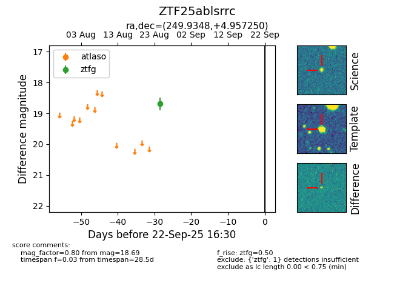

FINK: ZTF25ablsrrc
Lasair: ZTF25ablsrrc
ALeRCE: ZTF25ablsrrc
ZTF25ablsrrc (ztf,fink)
equatorial (ra, dec) = (249.9348,+4.95725)
galactic (l, b) = (21.4402,+31.42178)

last ztfg=18.69
1 ztfg detections